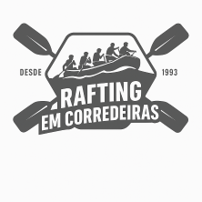

As melhores aventuras com rafting em corredeiras acontecem aqui!


As melhores aventuras com rafting em corredeiras acontecem aqui!
Nos dias de hoje, é difícil passar um tempo de qualidade com nossos amigos, família e com as pessoas que amamos, mas o Rafting é excelente oportunidade de unir as pessoas de uma forma divertida e descontraída. Os praticantes remando juntos e em sincronia atingem o objetivo comum que é descer as corredeiras com sucesso! Sendo excelente para fortalecer laços já existentes ou para fazer novos amigos.